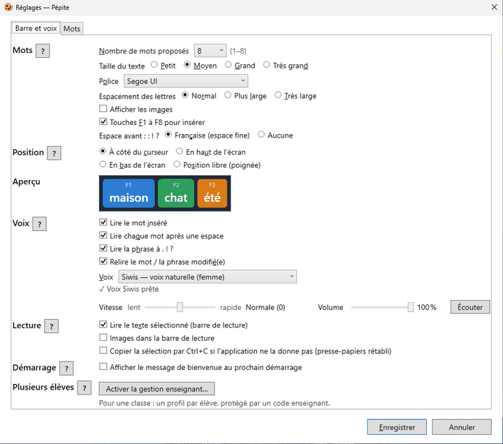
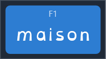
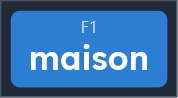
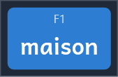
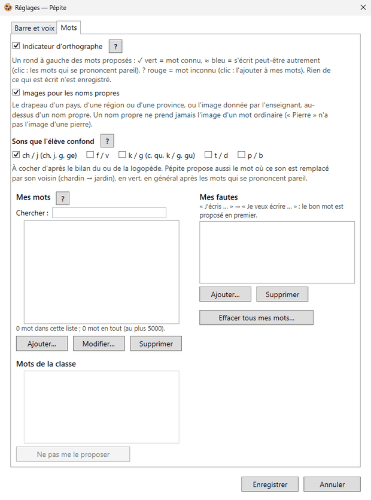

Les réglages
Pour que Pépite soit à ta taille. Clique sur le biscuit près de l'horloge, puis sur Réglages…

La fenêtre a deux onglets : Barre et voix et Mots.
Le bouton ? d'une partie ouvre l'aide de cette partie. La touche F1 aussi, quand la fenêtre Réglages est devant.
Mots
- Nombre de mots proposés
- De 1 à 8. Moins de mots, c'est plus facile à lire.
- Taille du texte
- Petit, Moyen, Grand ou Très grand. Les images grandissent aussi.
- Police
- La forme des lettres : Segoe UI, OpenDyslexic, Lexend ou Andika. Essaie, garde celle qui te va.



- Espacement des lettres
- Normal, Plus large ou Très large. Des lettres plus espacées se lisent souvent mieux.
- Afficher les images
- Avec ou sans images au-dessus des mots.
- Touches F1 à F8 pour insérer
- Décoche si tu as besoin des touches F pour autre chose. Le clic marche toujours.
- Clic sur un mot
- Au départ : Clic : écouter ; double-clic ou clic droit : insérer. C'est la convention habituelle d'autres outils de prédiction de mots (un clic écoute, un double-clic insère). Autres choix : 1er clic : écouter, 2e clic : insérer (un cadre blanc montre le mot entendu), ou Insérer tout de suite (le clic droit fait écouter). Un toucher compte comme un clic. Grisé quand le bouton haut-parleur est coché : un clic sur le mot l'écrit alors tout de suite. Voir Écouter avant d'écrire.
- Touches F1–F8
- Au départ : 1er appui : écouter, 2e : insérer (un cadre blanc entoure le mot entendu). Ou Insérer tout de suite. Ce choix ne change pas le clic, et le clic ne change pas les touches.
- Maj + F1…F8 : écouter le mot
- Décochée au départ. Maj + F3 dit le mot 3, sans l'écrire. Quand la barre est là, ces touches ne vont plus au programme (par exemple Word).
- Bouton haut-parleur sous chaque mot
- Décochée au départ. Un clic sur le haut-parleur dit le mot. Un clic sur le mot l'écrit tout de suite. La barre devient un peu plus haute.
- Espace avant ; : ! ?
- Française (espace fine) : après un mot choisi dans la barre, Pépite met une petite espace avant ces signes, comme dans les livres. Aucune n'en met pas.
Position
Où la barre apparaît : À côté du curseur (là où tu écris), En haut de l'écran, En bas de l'écran, ou Position libre (poignée) : tu la déplaces avec sa poignée à pointillés.
Aperçu
L'aperçu montre la barre avec tes choix, tout de suite.
Voix
- Lire le mot inséré
- Pépite dit le mot que tu as choisi.
- Lire chaque mot après une espace
- Pépite dit chaque mot que tu termines.
- Lire la phrase à . ! ?
- Pépite lit toute la phrase quand tu la finis.
- Relire le mot / la phrase modifié(e)
- Voir Relire ce que tu corriges.
- Voix, Vitesse, Volume
- Choisis la voix, sa vitesse et son volume, puis clique sur Écouter pour l'essayer. La voix Siwis est une femme, la voix Pierre un homme. Il y a aussi les voix de Windows.
Ces quatre cases sont cochées au départ.
Lecture
- Lire le texte sélectionné (barre de lecture)
- Active la barre de lecture.
- Images dans la barre de lecture
- Avec ou sans images pendant la lecture.
- Copier la sélection par Ctrl+C si l'application ne la donne pas (presse-papiers rétabli)
- Pour les programmes où la lecture ne marche pas sans copie. Trois choix : Dans LibreOffice Writer seulement (au départ ; dans Writer, Pépite lit la sélection directement et copie seulement si la lecture directe échoue), Partout, ou Jamais. Jamais dans LibreOffice Calc, même avec Partout. C'est un réglage pour les adultes : l'explication s'affiche quand la souris passe dessus.
Démarrage
Afficher le message de bienvenue au prochain démarrage : la fenêtre Pépite est prêt !
revient une fois, au prochain démarrage de Pépite.
Plusieurs élèves
Pour une classe : un profil par élève. C'est un réglage pour les adultes : voir Enseignants et parents.
L'onglet Mots

- Indicateur d'orthographe
- Le petit rond ✓, ≈ ou ? à gauche des mots. Voir le rond d'orthographe.
- Images pour les noms propres
- Le drapeau d'un pays ou l'image donnée par l'enseignant, au-dessus d'un nom propre. Un nom avec un trait d'union est proposé en entier, avec sa majuscule :
saint-n
propose Saint-Nicolas. - Sons que l'élève confond
- Pour un élève qui mélange deux sons proches. Voir plus bas.
- Mes mots, Mots de la classe, Mes fautes
- Voir Mes mots.
Sons que l'élève confond
Certains élèves mélangent deux sons proches. Ils écrivent chardin
pour jardin, ou foiture
pour voiture. Pépite propose alors aussi le bon mot.
- ch / j (ch, j, g, ge)
- Cochée au départ.
chardin
donne jardin,jien
donne chien. - f / v
foiture
donne voiture.- k / g (c, qu, k / g, gu)
crogne
donne grogne.- t / d
dable
donne table.- p / b
pateau
donne bateau.
Le mot trouvé ainsi est en vert, comme les mots qui se prononcent pareil. Il vient en général après eux dans la barre. Quand le mot est fini, le rond montre ≈ : un clic montre le bon mot.
C'est un réglage pour les adultes. À cocher d'après le bilan du ou de la logopède : une case cochée sans besoin ajoute des mots inutiles dans la barre. Le choix fait pour la Classe vaut pour chaque élève qui n'a pas fait son propre choix.
Enregistrer ou annuler
Enregistrer garde tes choix, même après avoir éteint l'ordinateur. Annuler (ou Échap) oublie tout.
Tes mots (onglet Mots) sont gardés tout de suite, sans Enregistrer.
Tu vois Réglé par l'administrateur
? À l'école, un adulte a choisi ce réglage pour tout l'ordinateur. Tu ne peux pas le changer.
À l'école, Pépite peut aussi demander le code enseignant avant d'ouvrir les réglages. Demande alors à ton enseignant.